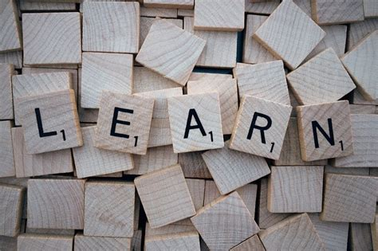

Bio of
Amanda Velasquez


• Never Stop Learning
• Always Improving
• Finally, I would love to build my own website and app to allow users free access to information (database) on plants and homesteading,
plant dieases, how to save seeds, how to grow from seeds, pests to look out for, bugs and animals that aid in pest management,
free ways to feed livestock, and much much more!!!
 • Puzzles/Strategy: Anything that forces critical thinking and thinking ahead. Every move counts,
every step leads closer to the goal or success (particularly with games)!
• Puzzles/Strategy: Anything that forces critical thinking and thinking ahead. Every move counts,
every step leads closer to the goal or success (particularly with games)!
• Martial Arts: Sparring and rolling (Jiu Jitsu sparring) are one of my favorite things
to practice, a second favorite is learning new techniques by watching breakdowns,
reading books, and more.
• Yoga: Using sequences and challenging self, aid in future goals for certain
poses and other exercising positions.
• Research: Can always improve more and find new or old ways to get things done better,
usually researching an amalgamation of topics.